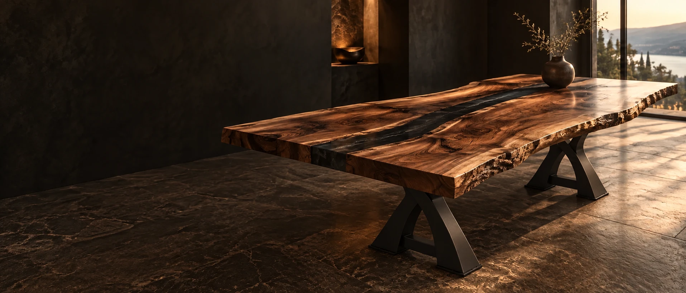
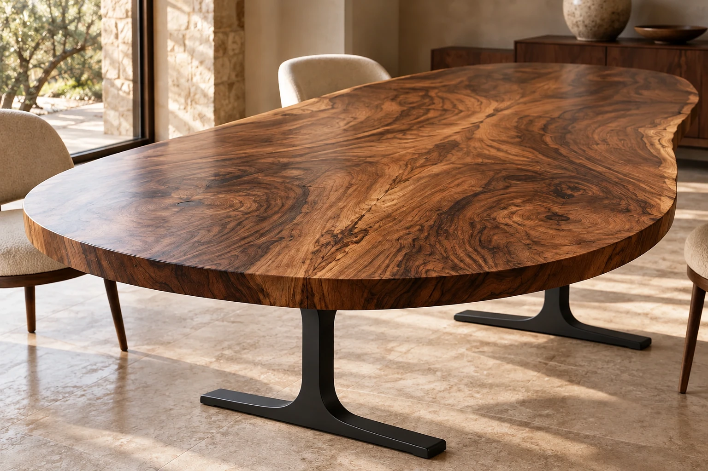
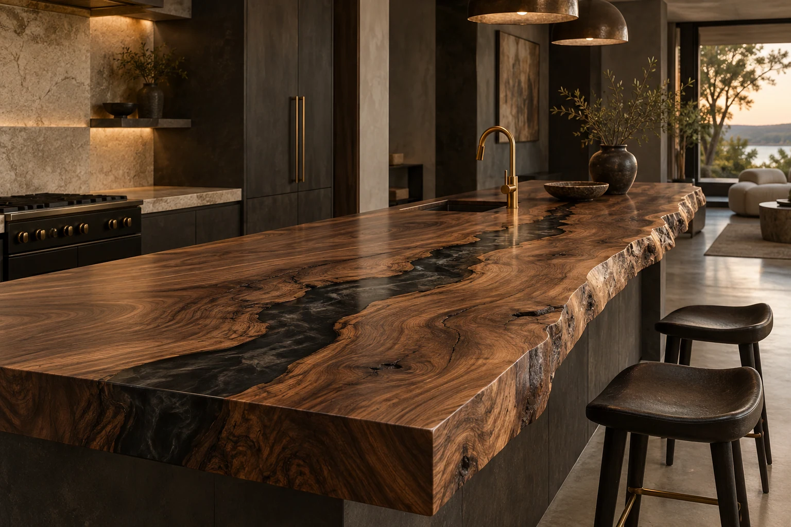
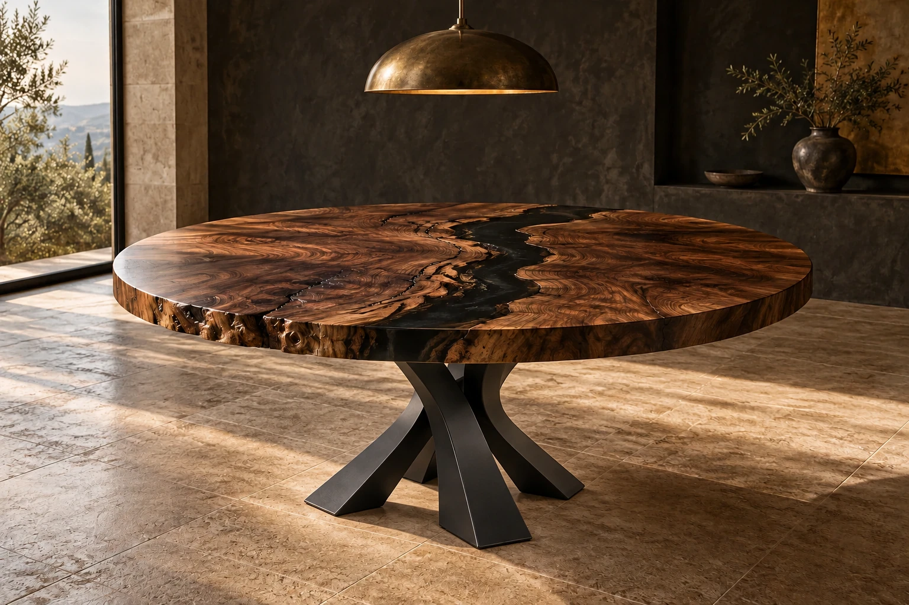
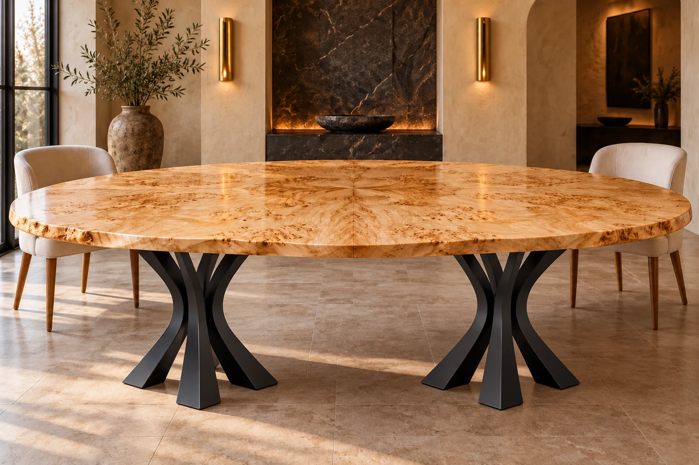
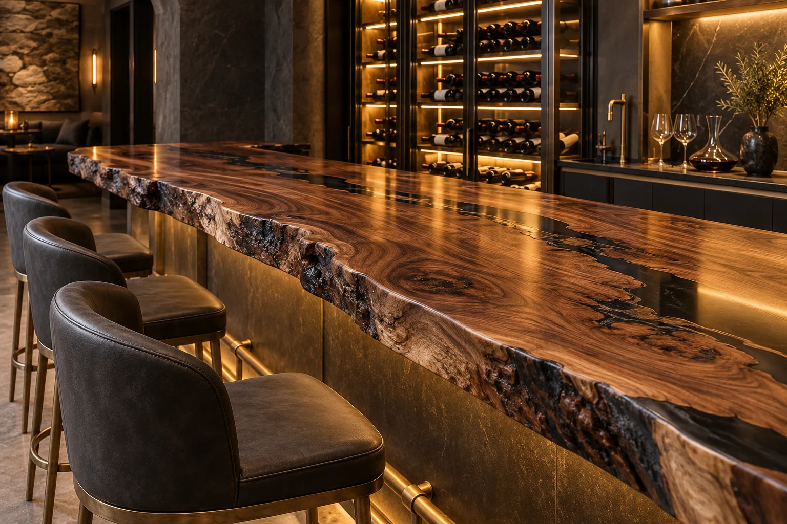
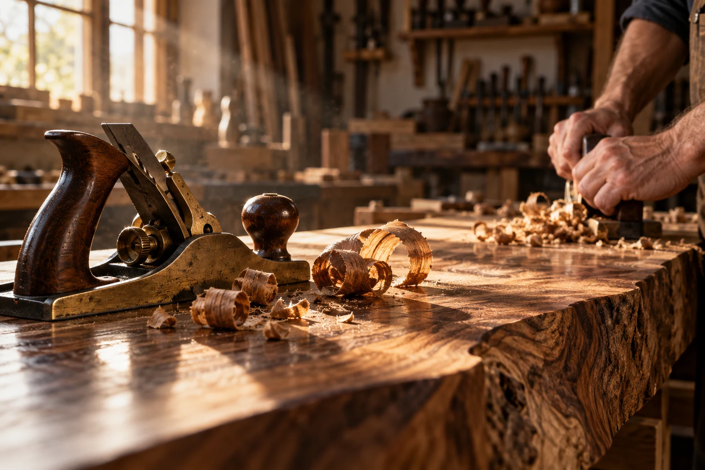

RIVER TABLES
A natural point of view.
Black walnut / Smoked resin / Curved-X steel

BESPOKE WOODWORK. WITHOUT EQUAL.
One-of-a-kind tables and statement surfaces.
Shaped by the wood. Made for the way you live.
01 / THE POSSIBILITIES
Some pieces fill a room.
Others give it a soul.
Explore a few directions for your next commission.
RIVER TABLES
Black walnut / Smoked resin / Curved-X steel

BOOKMATCH TABLES
Figured walnut / Slim I-profile steel


ROUND RIVER TABLES
Dark walnut / Crossed-steel pedestal

SCULPTURAL DINING TABLES
Figured maple / Branching steel trestles

Concept imagery shows metal-base styles guided by the supplied references. The exact base model, dimensions, finish, and suitability for your tabletop are confirmed in your project proposal.

THE BEAUTY IS IN THE MAKING.02 / OUR CRAFT
It begins with a piece of wood worth paying attention to. The grain. The movement. The small imperfections that make it impossible to repeat.
We work with that character to create something entirely personal. From the first sketch to the final finish, every choice has a purpose.
03 / FROM IDEA TO EVERYDAY
You bring the idea.
We bring it to life, together.
Tell us about your space, your ideas, and what you want the piece to feel like.
Explore slabs, proportions, resin colors, finishes, and a design that feels like you.
Your chosen materials become your piece, with care and attention at every stage.
We plan the finishing touches and delivery details so your piece finds its place.
Not simply made to fit.
Made to belong.
04 / YOUR NEXT ONE-OF-A-KIND
A dining table to gather around.
A bar with a story. A piece only you could imagine.
It starts with a conversation.
Your location, contact details, and availability
will be added here before launch.